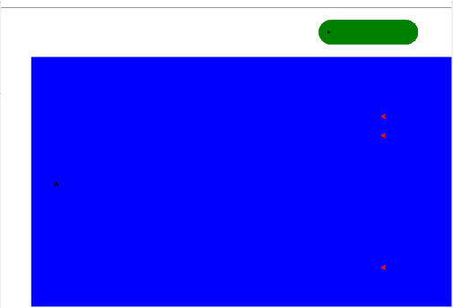
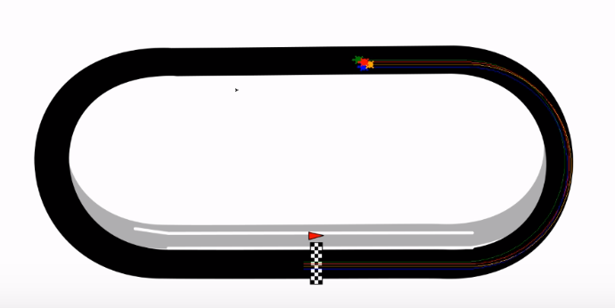
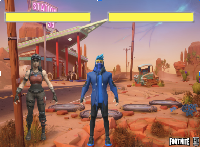
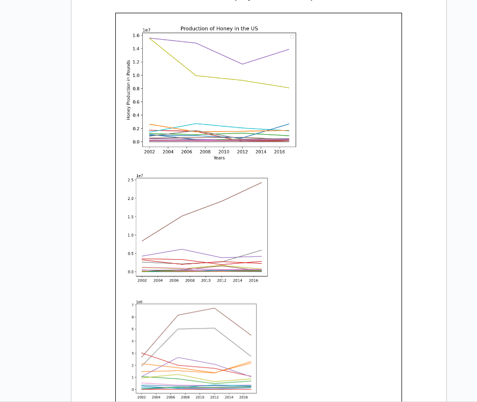
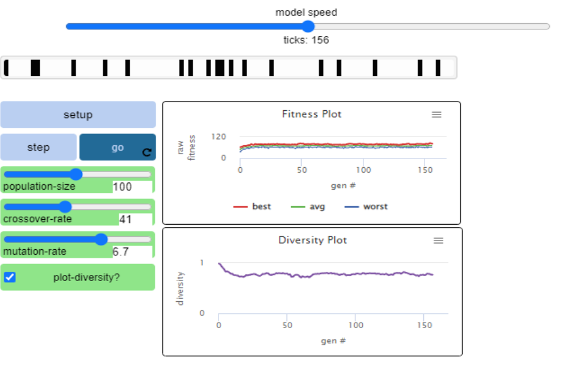
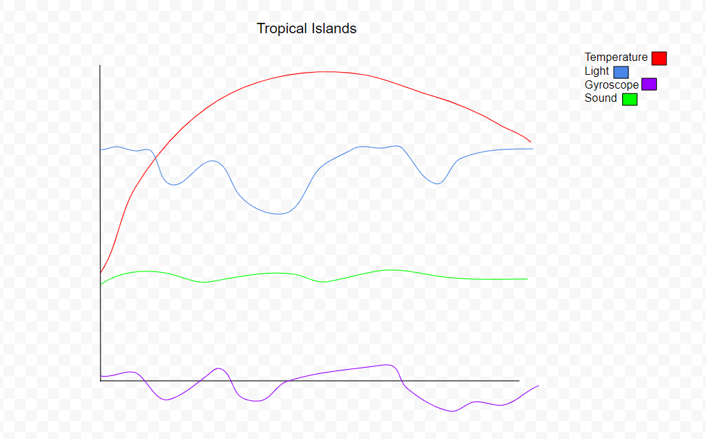

Portfolio
Home
Portfolio
About Me
This is my Portfolio Page!

This is the 1.19 game project, this game is basically artillery and it is designed for the player to stay alive while being shot at.

This is the 1.25 game project, this game consists of 4 turtles racing and one of which a player controls. They go around track to see who finishes first.

This is the first scratch project, this game is a twist of street fighter but instead we made it fortnite themed. With two modes, 1 or 2 players you can control and fight against an AI.

The image shows the production of honey in the United states with the following plots showing the in depth details of the honey production inside the United States.

My 4.1.4 project was on Simple Genetic Algorithm and the model here is simulating the genetic diversity of a gene pool in a certain population. The effect of gene crossover and mutations are simulated on a population. I would change this model by voiding the fitness graph and having a model that can represent more of how genetics are passed on through generation and not through their ability to survive. It cn be concluded that more genetics crossover results in less diversity and the same way goes both ways.

This is the 3.1.6 project. We were trying to figure out hich region the rover had landed on. The region that the rover has landed on is the Tropical Islands region because the data lined up with it. There were troubles beacsue it could've also been Rocky Mountains.